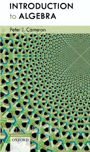

|  |
Peter J. Cameron
|
This is the web page for the new edition of Introduction to Algebra, published by Oxford University Press in 2008. (Not so new any more – this page is currently being updated)
The publisher's page is here.
You can see the preface and table of contents here.
This page will point you to a list of misprints, solutions to odd-numbered exercises, further exercises, additional material, etc.
A mathematics student usually first meets abstract ideas in the context of algebra. For this reason, some people find algebra a bit scary. But it shouldn't be:
To criticize mathematics for its abstraction is to miss the point entirely.
Abstraction is what makes mathematics work. If you concentrate
too closely on too limited an application of a mathematical idea, you rob
the mathematician of his most important tools: analogy, generality, and
simplicity. Mathematics is the ultimate in technology transfer.
Ian Stewart, Does God play dice? The mathematics of chaos, Penguin, London, 1990. |
In other words, in algebra, we can prove a theorem in (say) ring theory and apply it to integers, polynomials, matrices, and so on. We don't need to do the work over again in each new situation we meet. Also, the more general theorem may be easier, since inessential detail is stripped away.
Here is Doctor Johnson's definition of algebra in his dictionary:
This is a peculiar kind of arithmetick, which takes the quantity sought, whether it be a number or a line, or any other quantity, as if it were granted, and by means of one or more quantities given, proceeds by consequence, till the quantity at first only supposed to be known, or at least some power thereof, is found to be equal to some quantity or quantities which are known, and consequently itself is known.He clearly thought that algebra means solving equations! Read the book to find out what algebra is nowadays.
Read what other people have said about algebra here.
Solutions to odd-numbered exercises will appear here. This is work in progress.
More exercises will appear here from time to time.
Here you can find a list of known misprints.
The Web page for the first edition of the book is available here.
Peter J. Cameron
19 September 2019.